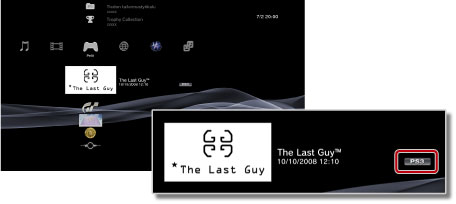

Pelit > PlayStation®Store-kaupasta ladattujen pelien pelaaminen > Ladattujen pelien pelaaminen
Ladattujen pelien pelaaminen
Voit pelata pelejä, jotka lataat (ostamalla tai ilmaiseksi)  (PlayStation®Store) -toiminnolla. Pelien pelaamistapa vaihtelee pelityypin mukaan. Pelityypin tiedot näkyvät pelikuvakkeen vieressä.
(PlayStation®Store) -toiminnolla. Pelien pelaamistapa vaihtelee pelityypin mukaan. Pelityypin tiedot näkyvät pelikuvakkeen vieressä.

Vihje
Voit lajitella pelit tyypin mukaan valitsemalla pelikuvakkeen, painamalla  -näppäintä ja valitsemalla sitten asetusvalikosta [Lajittele] > [Muoto].
-näppäintä ja valitsemalla sitten asetusvalikosta [Lajittele] > [Muoto].
PlayStation®3-muotoisen ohjelmiston pelaaminen

PlayStation®3-muotoista ohjelmistoa, joka ladataan (PlayStation®Store) -toiminnolla, voi käyttää pelaamiseen yleensä samaan tapaan kuin levymuodossa hankittavaa PlayStation®3-muotoista ohjelmistoa. Lisätietoja on tämän oppaan kohdassa  (Pelit) > [PlayStation®3-muotoisen ohjelmiston pelaaminen].
(Pelit) > [PlayStation®3-muotoisen ohjelmiston pelaaminen].
PlayStation®-muotoisen ohjelmiston pelaaminen
PlayStation®-muotoista ohjelmistoa, joka ladataan (PlayStation®Store) -toiminnolla, voi käyttää pelaamiseen yleensä samaan tapaan kuin levymuodossa hankittavaa PlayStation®-muotoista ohjelmistoa. Lisätietoja on tämän oppaan kohdassa (Pelit) > [PlayStation®2- ja PlayStation®-muotoisten ohjelmistojen palaaminen].
Ohjelmiston käyttöoppaat
Voit ehkä tuoda näyttöön lataamasi PlayStation®-muotoisen ohjelmiston ohjelmisto-oppaan. Paina pelin aikana langattoman ohjaimen PS-näppäintä ja valitse sitten [Ohjelmiston käyttöopas] näyttöön tulevasta ruudusta.
Levyn vaihtamista edellyttävät pelit
Jotkin ladatut PlayStation®-muotoiset ohjelmistot edellyttävät levyn vaihtamista. Jos pelaat tällaista peliä PS3™-järjestelmällä, levy vaihdetaan virtuaalisesti. Jos näyttöön tulee ilmoitus levyn vaihtamisesta, paina langattoman ohjaimen PS-näppäintä ja valitse sitten näyttöön tulevasta ruudusta [Vaihda levyjä]. Suorita vaihto loppuun noudattamalla näytön ohjeita.
PC Engine -muotoisten pelien pelaaminen
Lisätietoja PC Engine -muotoisten pelien pelaamisesta saat pelin mukana toimitetusta käyttöohjeesta. Käyttöohjeiden lukutavat voivat vaihdella eri peleissä. PC Engine -muotoisia pelejä ei ehkä ole saatavilla kaikissa maissa tai kaikilla alueilla.